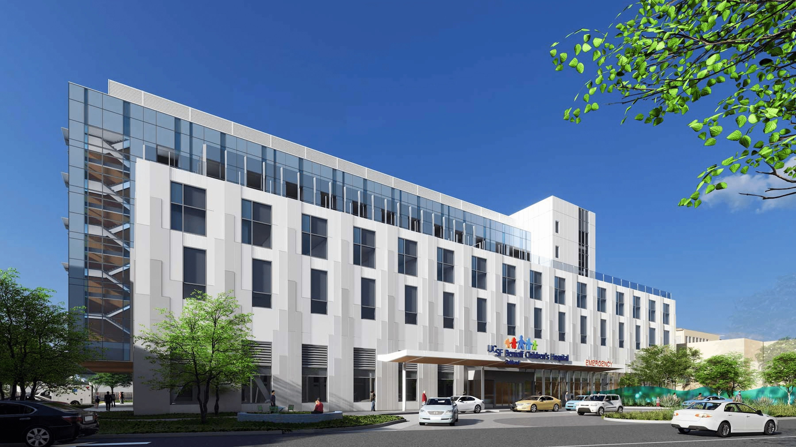
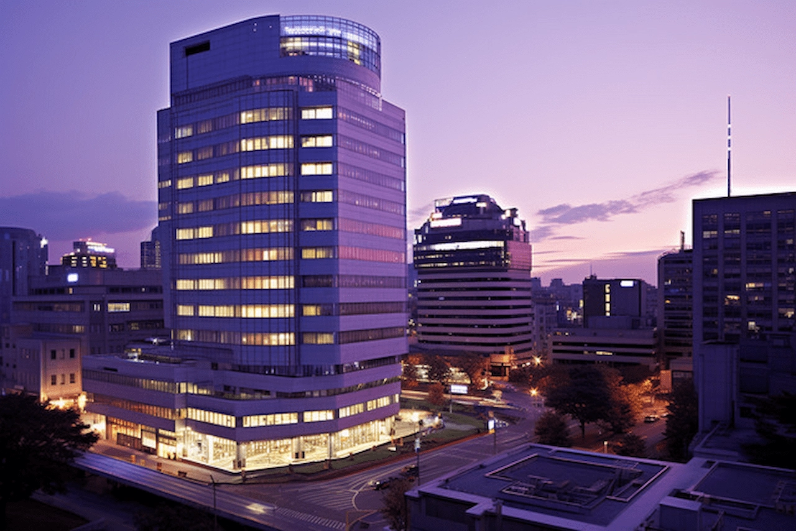

Colombo Branch
Our hospital's Colombo branch is a state-of-the-art healthcare facility located in the heart of the city. With a team of highly skilled doctors, nurses, and support staff, we offer a wide range of medical services, including advanced diagnostics, surgical procedures, and specialized treatments. Our Colombo branch is equipped with the latest medical technology and is committed to providing the highest quality care to our patients. Conveniently situated in Colombo, we are easily accessible to residents and visitors alike.
Negombo Branch

Our hospital's Negombo branch is a premier healthcare facility located in the vibrant city of Negombo. With a focus on providing accessible and affordable healthcare to the local community, we offer a comprehensive range of medical services, including general consultations, specialized treatments, and emergency care. Our Negombo branch is equipped with modern facilities and staffed by experienced healthcare professionals who are dedicated to delivering compassionate and quality care. Conveniently situated in Negombo, we are easily accessible to residents and visitors alike.
Jaffna Branch

Our hospital's Jaffna branch is a leading healthcare facility located in the historic city of Jaffna. With a commitment to providing exceptional medical care to the people of Jaffna and the surrounding region, we offer a wide range of services, including advanced diagnostics, surgical procedures, and specialized treatments. Our Jaffna branch is staffed by experienced healthcare professionals who are dedicated to delivering compassionate and quality care. Equipped with modern facilities and state-of-the-art technology, we are proud to be a trusted source of healthcare in the Jaffna.